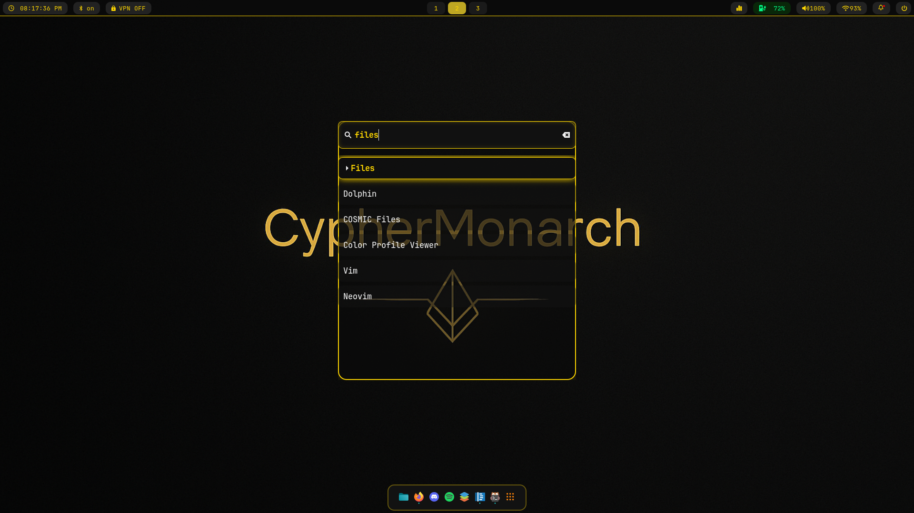
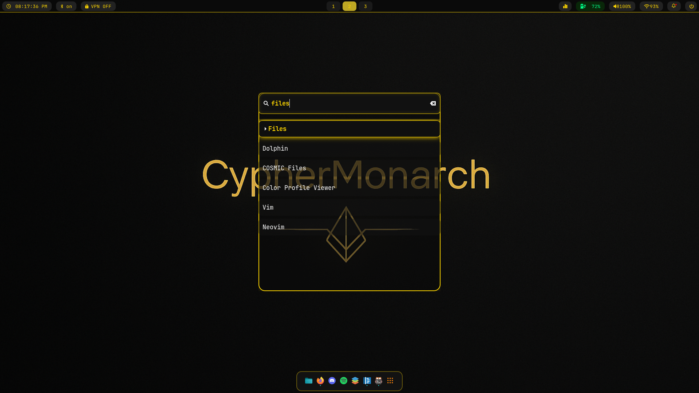

Operating System
Daily Driver: Arch Linux (Bare‑Metal)
My main rig runs Arch Linux with Hyprland — minimal, lightning-fast, and dialed in until it feels like it was built just for me.
Rocking Btrfs with Timeshift snapshots for instant rollbacks — because breaking things is part of the fun, and recovery should be painless.
Every tool I need sits exactly where I want it. Pure dev heaven.
(PS — grub-btrfs in action means Windows restore points look like a toddler trying to lift weights.)

 



Secondary Setup: Arch Linux (External HDD)
Same Arch + Hyprland vibe, but fully portable. A 300 GB external HDD — encrypted, Timeshift-ready, and carrying my full workflow wherever I go. Overkill for a rescue drive? Absolutely. But it boots on almost anything, so I can debug, code, or flex my setup anywhere without touching someone else’s system.